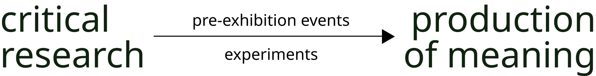
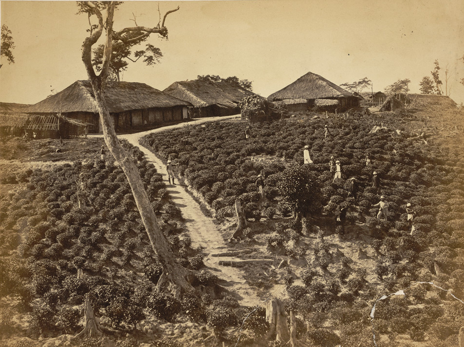
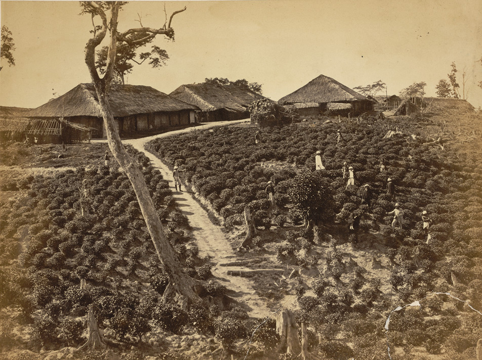
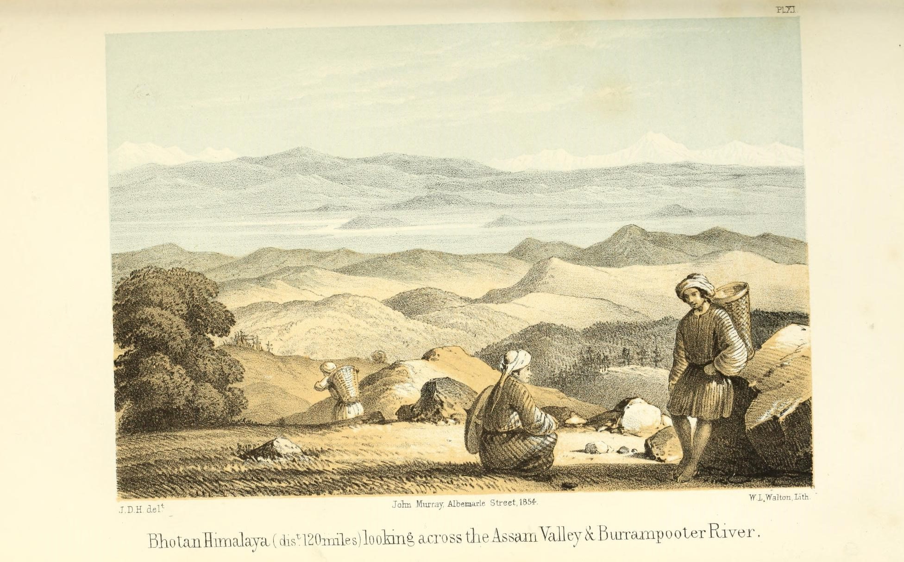
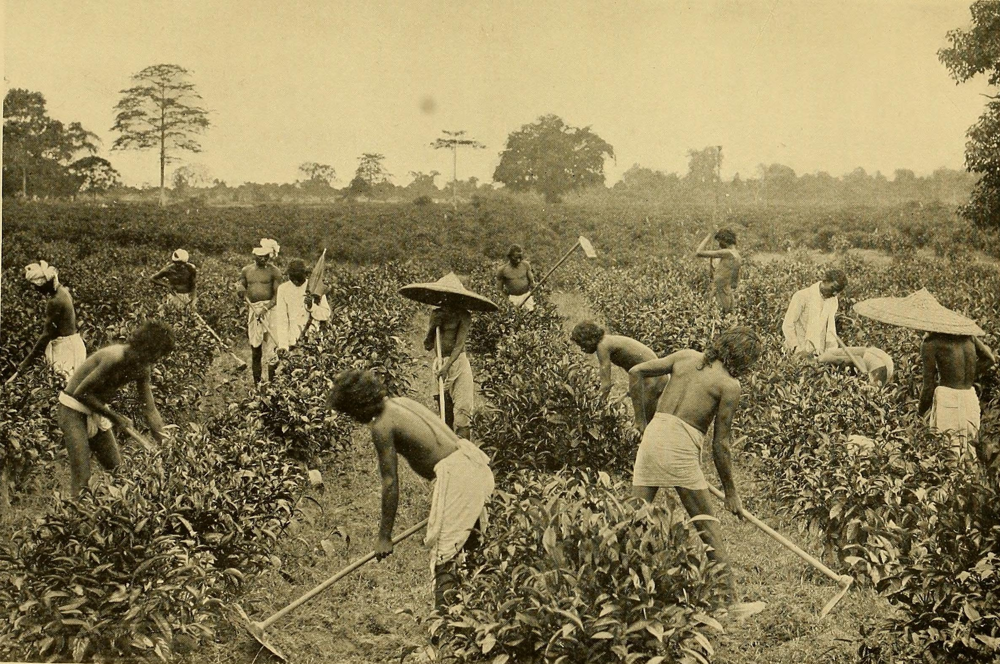
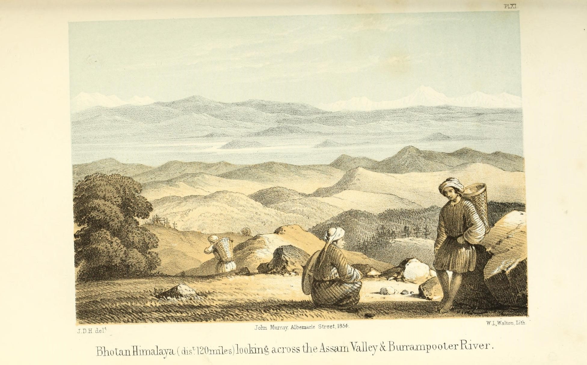
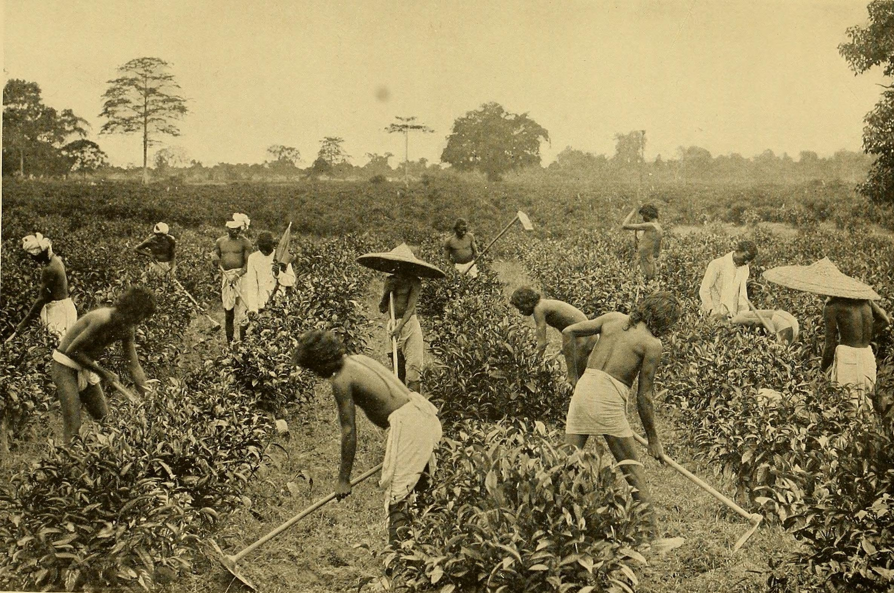

Curatorial Design*
a storm in a tea cup
- Status: Ongoing; Undergraduate Thesis Project
- Supervisor: Dr Sheetal M. Gokhale, Assistant Professor, IIT Guwahati
- Time Span: Aug 2022 - present
- Keywords:
curation is
selecting
organising
looking after
appropriately interpreting

Literature Review
Curation
- focus on method, interpretation and representation of the curatorial inquiry
- has a conventional due date, but benefits from a more extended period of observing design-in-use, thus longer than conventional design processes
- follows more loosely defined goals
- acts on an ad hoc basis as ideas develop
- acceptance as knowledge-in-the-making, use of newer methods
- active relational research sites with multiple dialogues and multivoicedness
- cultivate trust and openness between the curator and the audience
- creative performance using the world to think about, and both affirm and transform, the world
The “do it” project was conceived in 1993 by curator Hans-Ulrich Obrist and artists Christian Boltanski and Bertrand Lavier. Artists were asked to create instructions for their audiences to make themselves, rather than finished works.
Information
- unable to collect sufficient or substantive data
- archival information produced through editorial contextualization
- variations should be acknowledged with their possibilities and limitations
- vast "super-modern" period where large amount of historical data produced
- material legacy of this period is abundant
- tapping into local networks of responsible resource stewards
- most memories of a place are possessed only by those who stayed in and experienced the place as it unfolded
- many historical events are inaccessible to the public, thus there exists a gap in knowledge and understanding of an object or place's significance
- devoid of proper documentation and curation, information about the events will remain unknown and eventually vanish
The “do it” project was conceived in 1993 by curator Hans-Ulrich Obrist and artists Christian Boltanski and Bertrand Lavier. Artists were asked to create instructions for their audiences to make themselves, rather than finished works.
Context
- objects carry intrinsic value and meaning but may take on new extrinsic meanings over time and therefore carry the potential for re-appropriation
- an interesting puzzle for a curator to unearth by finding the true meaning in the appropriate context for an object
- historically, decorative arrangement of items took precedence over categorization or displays of data
- challenge of translating the local experience of reality to the whole world
- editor must seek to place the documentation within its historical context, signalling necessary details to increase its intelligibility and utility
- ensuring non-selective engagement with modern history is notoriously difficult due to the structuring impact of official 'lieux de memoire'
- reflect the current politics of representation amid the global transformation
The objects on the virtual “wall” of the RMCA website tool, arranged in uniform grids, become a panoply in digital form.
Narrative
- project's scope settles, think about how to communicate the research
- gives voice to the structure of memories for observers to empathise
- different elements used in conjunction achieve meaningful experiences
- ongoing debates around the world affect the narrative
- relationship between the objects and their textual commentary, spatial design, and modes of display, is essential for the narrative
- done with care without hurting any local or cultural communities
- various narratives to choose from on the subject, which helps understand the subject from different perspectives, but selectively curated
- lack of consistent and comprehensible documentation leads to a disconnected narrative
- "How might such decontextualized objects speak for themselves?"
Modern restorations at the Royal Museum of Kaula Lumpur have led to the destruction of various articles without proper documentation. The museum has continuously struggled to create a comprehensive narrative for the collection.
Collaboration
- conversations raise new perspectives and questions, which help to expand the scope of understanding and interpretation of an exhibit
- curator has now become a conductor rather than a controller
- collective action and cross-sector coordination are more effective than an isolated activity of an individual or an organisation
- empowering other voices – not the museum or the curator’s own
- community, educators, collectors, researchers, and private enterprises
- ‘new museums’ explore how to include wider groups of people in the creative processes as participants, co-creators, or co-workers
- ‘participatory museums’ shift from an inward collection focus toward outward attention to social responsibility and community building
- affects the timespan of exhibition making
The round table at the ‘One picture can chang’ exhibition became a central design element of the exhibition activated by the museum staff and audiences as a place for sharing thoughts and reflections during tours and events.
Preservation
- rapid development has led to increased efforts to conserve historical heritage worldwide
- crucial to maintain both the object and its meaning and value
- objects also reflect assigned values as they were often retained by a creator or custodian because of an assignment of significance
- private collections are endangered, and preserving them requires extensive documentation and long-term curation
- archival holdings are developed through acquiring primary sources in their original documentary forms and made accessible through on-site and digital access structures
- curating as a preservation through active relations of reciprocity and dialogue
The Mobile Phone Museum since 2019 has catalogued, labelled, photographed and moved mobile phones to secure storage facility to safeguard the mobile technology heritage. The collection has more than 2400 phones and digitised.
Medium
- medium plays a vital role in correctly contextualising the objects and the exhibition
- the correct medium can make valuable heritage resources, vital for teaching, researching and learning accessible, catalogued and discoverable
- focus on design reveals a highly complex relationship between the internal space of a gallery and the objects, which leads to the question of whether a temporal interior design can define the meaning of objects
- more recently, state-of-the-art technology is avaliable for integration with non-centralised museum experiences in creating outdoor experiences
- what are the positive and negative aspects of being able to touch and sense a physical object versus its digital surrogate?
- what is lost or gained while selecting a medium over the other?
WW1 frontlines have disappeared, but 305 memorial trees in Ypres mark the location of the most motionless frontlines. Using dozens of aerial photographs, the app puts these young elms back in the historical landscape.
Evaluation
- editorial decisions have varied consequences on the usability of an archived document
- curator must determine the extent to which an edited source can operate reliably as an original source and the readings it can support
- to what extent do the artifactual identities of the edited documents reflect those of the originating sources?
- how does the documentary edition functionally represent the sources in terms of the visual presentation of the documents?
- what is the influence of any editorial amendments to the texts?
- what is the expertise of the documentary editors providing this contextualization?
- conversely, these questions can also be used by the curator to evaluate their own initiative's design and implementation for use by others in the future
Resources
As the exhibit moves towards the date of the display, looking at the overall programme, one must identify operational and practical resources - potential contractors, staff allocation, and assigning project budget and venue
Case Study 1: Tea cultivation in Assam during the British colonial era
Timeline of Events
- 1823 - Robert Bruce introduced to a plant with which the Singpho and Khamti people made beverages
- early 1830s - Robert's brother Charles arranges for leaves from Assam to be sent to the botanical gardens in Calcutta for examination
- 1833 - tea garden was started by the Government in Lakhimpur district
- 1836 - Nathaniel Wallich, William Griffith and John McClelland dispatched from the Tea Committee to visit Assam
- 1837 - annexation of upper Assam leads to tea mass manufacture practices
- 1837 - the first English tea garden was established at Chabua in Upper Assam
- 1838 - first batch shipped to London from company's experimental garden
- 1838 - Wasteland Rules of 1838 to clear and privatize plots of land for agricultural purposes, makes it nearly impossible for natives to start plantations
- January 1839 - the first batch auctioned in London
- ...
- ...
- ...
 

 



Insights
- inaccessibility to unpublished sources at the National Archives
- inaccessibility of published sources online
- unavailability of physical books published in the 19th and early 20th century
- even though in the public domain, it is not easy to download resources from the repositories of libraries and museums
- all original and documentarry editions of resources discuss from the British point of view and not from that of the Indian population at the time
- non-credible information
Learnings
- push for a capitalist narrative post-independence
- objects found produce a disjointed and dissociated narrative
- better to find a collection before deciding the topic
Ongoing & Future Work
Morbi fermentum eu odio at iaculis. Duis id lobortis lacus. Nulla lobortis justo quis nulla elementum, nec tincidunt ante vehicula. Nulla rhoncus mauris purus, sed ornare ipsum aliquam eu. Aenean malesuada elementum felis ut ullamcorper. Aenean dictum turpis in ultricies pellentesque. Cras lectus ante, cursus sed bibendum sagittis, ullamcorper sit amet metus. Nulla facilisi. Mauris diam dui, dictum vitae varius eu, iaculis vitae tortor. Maecenas suscipit vulputate leo non euismod. Etiam dolor leo, dictum a molestie sed, sollicitudin vel enim. Donec et ornare arcu. Interdum et malesuada fames ac ante ipsum primis in faucibus. Morbi sed dolor nec odio porta iaculis id in augue. Ut interdum diam nec ornare varius. Phasellus vulputate tempor dui eu elementum.